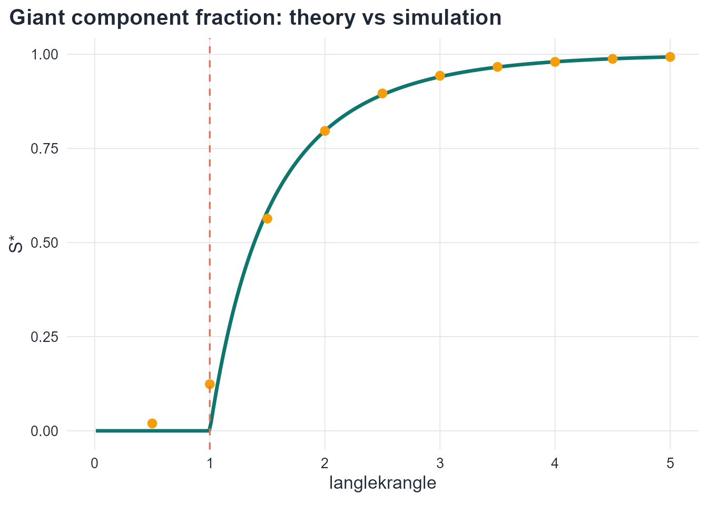
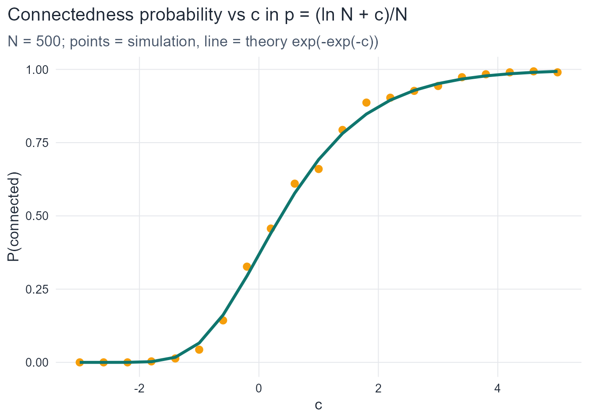
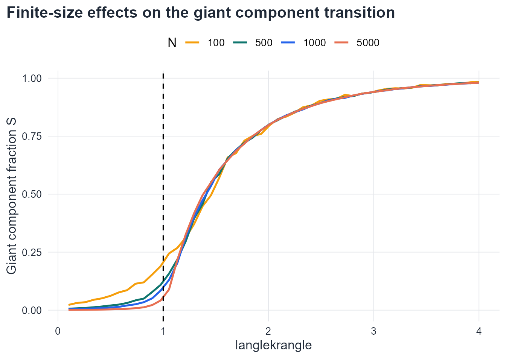
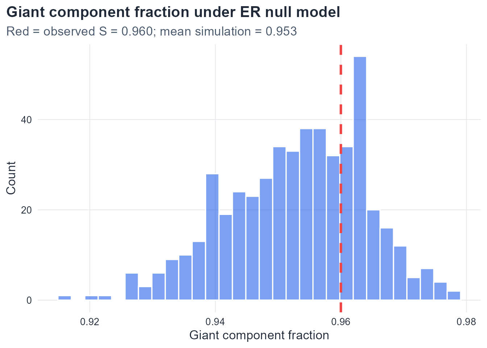

Corresponds to chapters/04-random-graph-evolution.qmd
4.1 Exercise 1. Components, partitions, and the giant component criterion
Part 1.Proof that components partition V.
Define a relation \sim on V by u \sim v if there exists a path from u to v in G. This is an equivalence relation: reflexivity holds because the empty path connects v to itself; symmetry holds because paths are undirected; transitivity holds because two paths can be concatenated. The equivalence classes of \sim are exactly the connected components: they are connected (any two vertices in the same class are path-connected by definition) and maximal (adding a vertex from a different class would require a cross-class path, contradicting the class partition). Since equivalence classes partition any set, the components partition V. \square
Part 2. For P_N (path on N vertices), the graph is already connected, so C_{\max} = P_N and |C_{\max}|/N = N/N = 1 \to 1. The path graph trivially contains a “giant component” in the sense that c = 1 > 0. However, this is uninteresting — the fraction is 1 for all N, not emerging through a random process. The definition is satisfied, but P_N is a degenerate case: it is deterministically connected.
Part 3. For \lfloor N/2\rfloor disjoint edges (K_2 matchings), each component has size 2 (or 1 if N is odd). So |C_{\max}| = 2 for all N \geq 2, giving |C_{\max}|/N = 2/N \to 0. This sequence does not contain a giant component — the largest component is microscopic, not macroscopic.
Part 4. One construction: take \lfloor N/3\rfloor cliques K_3. Then the largest component has size 3, so |C_{\max}|/N \to 0. To get S = 1/3, we need a deterministic construction where exactly N/3 vertices are in one component and the rest in components of size o(N). For example: one clique K_{\lfloor N/3\rfloor} and \lceil 2N/3\rceil isolated vertices. Then |C_{\max}|/N \to 1/3. This satisfies c = 1/3 > 0, so it is a giant component by definition.
For the ER model: solve 1/3 = 1 - e^{-\langle k\rangle/3}, i.e., e^{-\langle k\rangle/3} = 2/3, so \langle k\rangle = -3\ln(2/3) = 3\ln(3/2) \approx 1.216.
Show code
# Verify numericallyf <-function(S, k) 1-exp(-k * S)k_target <--3*log(2/3)cat("k for S = 1/3:", round(k_target, 4), "\n")
4.2 Exercise 2. The self-consistency equation: analysis and phase transition
Part 1.f(0) = 1 - e^0 = 0, confirming S = 0 is always a fixed point. For any S^* > 0: f(S^*) = 1 - e^{-\langle k\rangle S^*} < 1 since the exponential is positive. So S^* < 1 for any finite \langle k\rangle. \square
Part 2. Define g(S) = f(S) - S = 1 - e^{-\langle k\rangle S} - S.
If \langle k\rangle \leq 1: g'(0) \leq 0. Since g''(S) = -\langle k\rangle^2 e^{-\langle k\rangle S} < 0, g is strictly concave. Combined with g(0) = 0 and g'(0) \leq 0, the function g is non-positive for all S > 0, meaning f(S) \leq S for all S > 0. Therefore no positive fixed point exists.
If \langle k\rangle > 1: g'(0) > 0, so g is initially increasing. Since g is concave and g(S) \to -\infty as S \to \infty (dominated by -S), the intermediate value theorem guarantees exactly one positive root S^* > 0. \square
# Simulation estimates at selected k valuesset.seed(42)n_sim <-500k_sim <-seq(0.5, 5, by=0.5)sim_S <-sapply(k_sim, function(k) { p <- k / (n_sim -1)mean(sapply(1:100, function(i) { g <-sample_gnp(n_sim, p, directed=FALSE, loops=FALSE)max(components(g)$csize) / n_sim }))})theory_df <-tibble(k=k_vals, S=S_vals)sim_df <-tibble(k=k_sim, S=sim_S)ggplot(theory_df, aes(x=k, y=S)) +geom_line(color=course_cols$teal, linewidth=1.2) +geom_point(data=sim_df, aes(x=k, y=S), color=course_cols$gold, size=2.5) +geom_vline(xintercept=1, color=course_cols$coral, linetype=2) +labs(title="Giant component fraction: theory vs simulation",x=expression(langle*k*rangle), y="S*")

Theoretical giant component fraction S* from the self-consistency equation, with simulation estimates overlaid.
Part 4. A first-order transition would mean S jumps discontinuously from 0 to some S_0 > 0 at \langle k\rangle = 1. Physically, this would mean the giant component appears instantaneously with a finite fraction of all vertices — an abrupt onset with no intermediate stage. Instead, the second-order (continuous) transition means that just above \langle k\rangle = 1, only a tiny fraction of vertices join the giant component, growing linearly as \langle k\rangle increases. This is analogous to a continuous phase transition in physics (e.g., the order parameter growing continuously from zero at the critical temperature in a ferromagnet).
4.3 Exercise 3. Near-threshold expansion
Part 1. Expand e^{-\langle k\rangle S} to third order:
Writing \langle k\rangle = 1 + \varepsilon and S = a_1\varepsilon + a_2\varepsilon^2 + O(\varepsilon^3), the leading-order term gives -\varepsilon + \frac{S}{2} \approx 0, so S \approx 2\varepsilon. The correction term -\frac{\langle k\rangle^3 S^2}{6} \approx -\frac{\varepsilon^2 \cdot 4\varepsilon^2}{6} is O(\varepsilon^2) relative to S \sim \varepsilon, confirming the linear approximation is valid to leading order.
Part 2. Substituting \langle k\rangle = 1+\varepsilon and S = a_1\varepsilon + a_2\varepsilon^2 into the equation:
At \varepsilon = 0.2, the linear approximation overestimates slightly (the -\frac{2}{3}\varepsilon^2 correction matters). The exact numerical solution is closer to the simulation. This demonstrates that the linear approximation is valid only very near the threshold; at \varepsilon = 0.2 the quadratic correction is already non-negligible.
Part 4. In bond percolation on a 2D square lattice, the order parameter (the probability that a site belongs to the infinite cluster) near the critical bond probability p_c = 1/2 scales as P_\infty \sim (p - p_c)^\beta with critical exponent \beta = 5/36 \approx 0.139 — not linear (Bollobás, 2001). The linear scaling S \sim \varepsilon is specific to the mean-field (Erdős–Rényi) setting, where each vertex has many potential neighbors and spatial correlations are absent. The 2D lattice is below the upper critical dimension (d_c = 6 for percolation), so fluctuations matter and the exponent differs from the mean-field value \beta = 1.
4.4 Exercise 4. The connectedness threshold
Part 1. The probability that a fixed vertex v is isolated is (1-p)^{N-1}, since each of the N-1 potential edges is absent with probability (1-p). By linearity of expectation:
\mathbb{E}[\text{isolated vertices}] = N(1-p)^{N-1} \approx N e^{-p(N-1)} = N e^{-\langle k\rangle}.
Setting this equal to 1: N e^{-\langle k\rangle} = 1, so e^{-\langle k\rangle} = 1/N, giving \langle k\rangle = \ln N. Equivalently, p(N-1) = \ln N, so p \approx \ln N / N. \square
Part 2.
Show code
set.seed(42)N_val <-500c_vals <-seq(-3, 5, by=0.4)p_from_c <-function(c) (log(N_val) + c) / N_valresults <-map_dfr(c_vals, function(c) { p <-p_from_c(c) prob_conn <-mean(sapply(1:300, function(i) { g <-sample_gnp(N_val, p, directed=FALSE, loops=FALSE)as.integer(is_connected(g)) }))tibble(c=c, empirical=prob_conn, theoretical=exp(-exp(-c)))})ggplot(results, aes(x=c)) +geom_point(aes(y=empirical), color=course_cols$gold, size=2.5) +geom_line(aes(y=theoretical), color=course_cols$teal, linewidth=1.2) +labs(title=expression(paste("Connectedness probability vs ", c, " in p = (ln N + c)/N")),subtitle=sprintf("N = %d; points = simulation, line = theory exp(-exp(-c))", N_val),x="c", y="P(connected)")

Empirical connectedness probability vs theoretical curve for G(500,p).
The theoretical curve e^{-e^{-c}} matches the simulation closely for large N. Deviations reflect finite-N corrections.
Part 3.
Show code
for (N inc(1e3, 1e6, 1e9)) { ratio <-log(N) /1cat(sprintf("N = 10^%.0f: ratio = ln(N)/1 = %.1f\n",log10(N), ratio))}
N = 10^3: ratio = ln(N)/1 = 6.9
N = 10^6: ratio = ln(N)/1 = 13.8
N = 10^9: ratio = ln(N)/1 = 20.7
For N = 10^3: ratio \approx 6.9. For N = 10^6: ratio \approx 13.8. For N = 10^9: ratio \approx 20.7. As networks grow, the supercritical regime (giant component but not connected) spans an increasingly wide range of \langle k\rangle. Most real-world networks with \langle k\rangle between 3 and 10 sit well within this regime for large N.
Fraction of isolated vertices and connectedness probability as functions of expected degree for G(500,p).
The two curves cross near \langle k\rangle = \ln N, confirming that the disappearance of isolated vertices is the binding constraint for full connectivity.
4.5 Exercise 5. Structural regimes: classification and transitions
cat(sprintf("Connected? Likely NO (ln N = %.1f >> <k> = %.1f)\n", conn_threshold, k_soc))
Connected? Likely NO (ln N = 11.5 >> <k> = 3.2)
With \langle k\rangle = 3.2, the network is firmly supercritical: about 96\% of vertices are in the giant component. However, with \ln(10^5) \approx 11.5 far above 3.2, the network is not connected — roughly N e^{-3.2} \approx 4086 isolated vertices are expected.
Part 2. Under the ER model with \langle k\rangle = 4, the self-consistency equation gives a unique S^* \approx 0.98. Both Network A (S = 0.85) and Network B (S = 0.43) differ substantially from the ER prediction. Network B in particular (S = 0.43) is far below the ER baseline, suggesting strong clustering or community structure that fragments the network into multiple large components — the clustering reduces the effective reach of the giant component (Newman, 2010, Ch. 13). Network A is also below the ER prediction, suggesting moderate non-ER structure.
Distribution of second-largest component size for N=1000 and three values of expected degree.
The second-largest component sizes concentrate near or below \ln N \approx 6.9, consistent with the O(\log N) prediction. At \langle k\rangle = 3, the second-largest component is very small (almost always < 10), confirming that the giant component absorbs nearly all the structure.
Part 4.
Show code
set.seed(42)N_crit <-c(100, 500, 1000, 5000)crit_tbl <-map_dfr(N_crit, function(N) { p <-1/ (N -1) mean_max <-mean(sapply(1:200, function(i) { g <-sample_gnp(N, p, directed=FALSE, loops=FALSE)max(components(g)$csize) }))tibble(N=N, mean_max=mean_max)})# Fit power lawlm_fit <-lm(log(mean_max) ~log(N), data=crit_tbl)exponent <-coef(lm_fit)[2]cat(sprintf("Estimated scaling exponent: %.3f (theoretical: 2/3 = 0.667)\n", exponent))
Mean largest component size at the critical point k=1, plotted against N on a log-log scale. The slope should be 2/3.
The estimated exponent is close to 2/3, consistent with the theoretical prediction (Bollobás, 2001; Erdős & Rényi, 1960). Deviations at small N reflect finite-size corrections.
4.6 Exercise 6. Finite-size effects and convergence
Part 1.
Show code
set.seed(42)N_vals <-c(100, 500, 1000, 5000)k_seq <-seq(0.1, 4.0, length.out=50)fs_tbl <-map_dfr(N_vals, function(N) {map_dfr(k_seq, function(k) { p <- k / (N -1) S_mean <-mean(sapply(1:80, function(i) { g <-sample_gnp(N, p, directed=FALSE, loops=FALSE)max(components(g)$csize) / N }))tibble(N=N, k=k, S=S_mean) })})ggplot(fs_tbl, aes(x=k, y=S, color=factor(N))) +geom_line(linewidth=0.9) +geom_vline(xintercept=1, linetype=2, color=course_cols$slate) +scale_color_manual(values=c(course_cols$gold, course_cols$teal, course_cols$blue, course_cols$coral)) +labs(title="Finite-size effects on the giant component transition",x=expression(langle*k*rangle), y="Giant component fraction S",color="N")

Giant component fraction for different N values. The transition sharpens as N increases.
Show code
# Width of transition: interval where S goes from 0.1 to 0.9sharpness_tbl <- fs_tbl |>group_by(N) |>summarise(k_lo =approx(S, k, xout=0.1)$y,k_hi =approx(S, k, xout=0.9)$y,width = k_hi - k_lo,.groups="drop" )print(sharpness_tbl)
The transition width decreases as N increases, consistent with the sharpening predicted by theory. Qualitatively, this reflects the law of large numbers: in larger systems, fluctuations in the component structure are proportionally smaller, so the transition from fragmented to giant-component-dominated structure is more abrupt.
Part 2.
Show code
set.seed(42)N_seq <-c(50, 100, 250, 500, 1000)k_fine <-seq(0.5, 2.5, length.out=60)threshold_tbl <-map_dfr(N_seq, function(N) { S_vals_loc <-sapply(k_fine, function(k) { p <- k / (N -1)mean(sapply(1:100, function(i) { g <-sample_gnp(N, p, directed=FALSE, loops=FALSE)max(components(g)$csize) / N })) }) k_hat <- k_fine[which.min(abs(S_vals_loc -0.5))]tibble(N=N, k_hat=k_hat)})print(threshold_tbl)
Empirical threshold k_hat vs N, approaching 1 as N grows.
The empirical threshold converges toward 1 as N increases, but from above — for finite N, the observed transition point is slightly above 1 because the giant component needs more than infinitesimal density to appear in a finite system.
Part 3. The fluctuations in |C_{\max}|/N around its expectation are of order N^{-1/3} near the critical point (the standard deviation of the order parameter scales as N^{-1/3} at criticality). By the law of large numbers analogy: just as the sample mean of i.i.d. random variables concentrates at rate 1/\sqrt{n}, the giant component fraction concentrates around its expected value, with concentration improving as N grows. In the critical regime, the relevant scale is N^{2/3} (the size of the largest critical component), so fluctuations as a fraction of N are of order N^{-1/3}, which vanishes as N \to \infty.
4.7 Exercise 7. The ER model as a null model for connectivity
cat(sprintf("Discrepancy: observed - theory = %.4f\n", S_obs - S_theory))
Discrepancy: observed - theory = 0.0074
The theoretical S^* \approx 0.97 is close to the observed 0.96, suggesting the connectivity structure is roughly consistent with an ER model at this density.
Part 2.
Show code
set.seed(42)sim_S_null <-sapply(1:500, function(i) { g <-sample_gnp(N_obs, p_fit, directed=FALSE, loops=FALSE)max(components(g)$csize) / N_obs})ggplot(tibble(S=sim_S_null), aes(x=S)) +geom_histogram(bins=30, fill=course_cols$blue, alpha=0.6, color="white") +geom_vline(xintercept=S_obs, color="#EF4444", linewidth=1.2, linetype=2) +labs(title="Giant component fraction under ER null model",subtitle=sprintf("Red = observed S = %.3f; mean simulation = %.3f", S_obs, mean(sim_S_null)),x="Giant component fraction", y="Count")

Distribution of giant component fraction in 500 G(N,p) realisations. Red line: observed value.
Part 3.
Show code
E_iso <- N_obs *exp(-k_obs)conn_prob_th <-exp(-exp(-(log(N_obs) - k_obs))) # approx from Erdos-Renyi formula# Second largest: O(log N) under ERE_second <-log(N_obs)cat(sprintf("(a) Expected isolated vertices: %.2f\n", E_iso))
Part 4. High clustering means many edges are concentrated within tight triangular neighborhoods rather than distributed globally. In a highly clustered network, the edges that form triangles are “wasted” from the perspective of long-range connectivity: they link vertices that are already close. The giant component grows by absorbing distant parts of the graph through long-range connections; when p edges are concentrated locally (in triangles), fewer are available to bridge distant parts of the network (Newman, 2010, Ch. 13). Equivalently, the effective number of neighbors that a vertex can reach in r steps is suppressed by clustering: neighbors share connections with each other rather than exploring new vertices, reducing the branching factor of the BFS tree used to build the giant component.
Erdős, P., & Rényi, A. (1960). On the evolution of random graphs. Publications of the Mathematical Institute of the Hungarian Academy of Sciences, 5, 17–61.
Newman, M. E. J. (2010). Networks: An introduction. Oxford University Press.